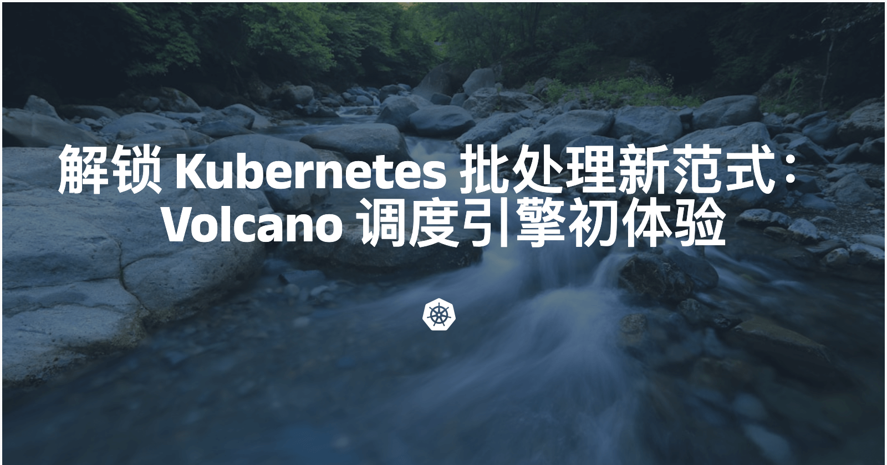
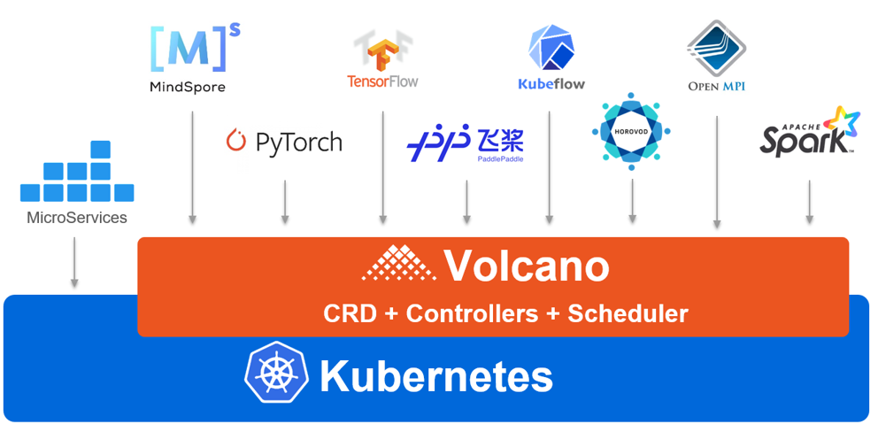
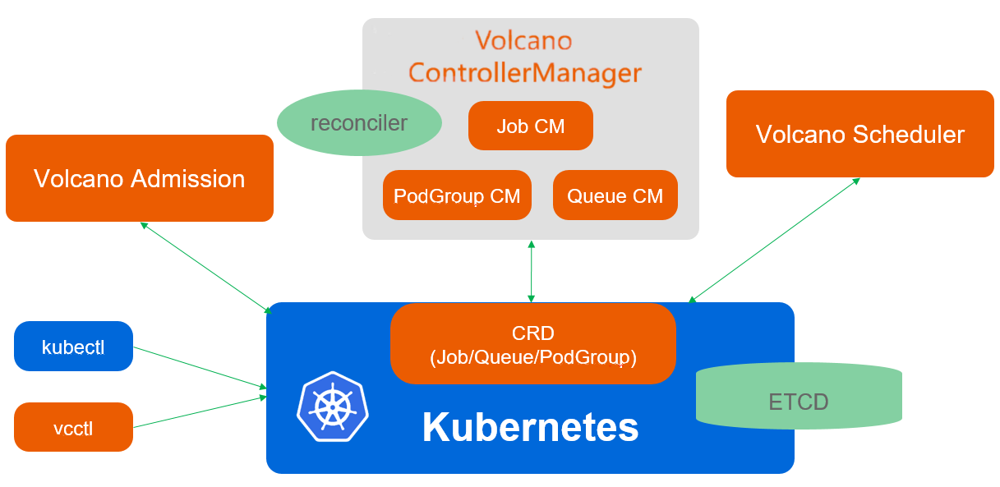
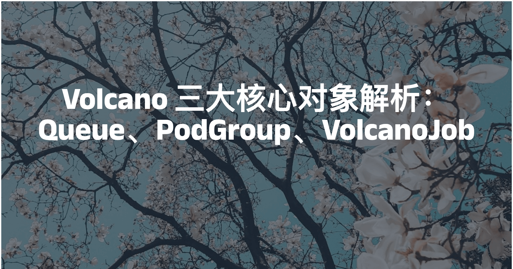
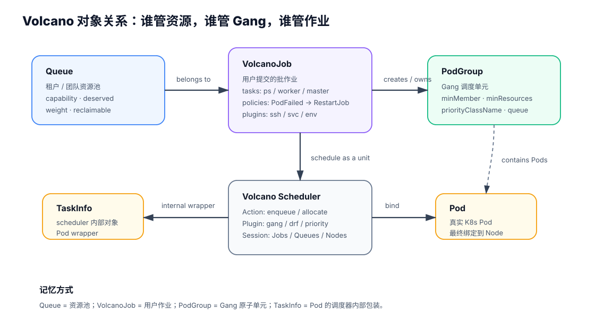
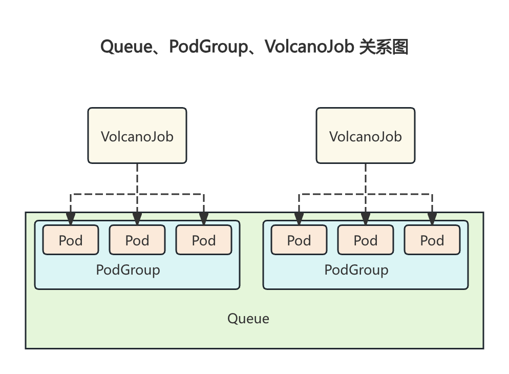
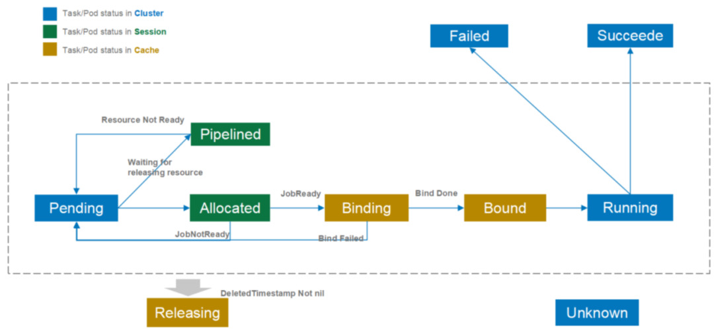
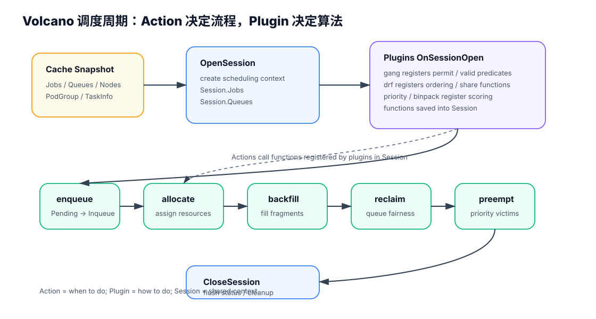
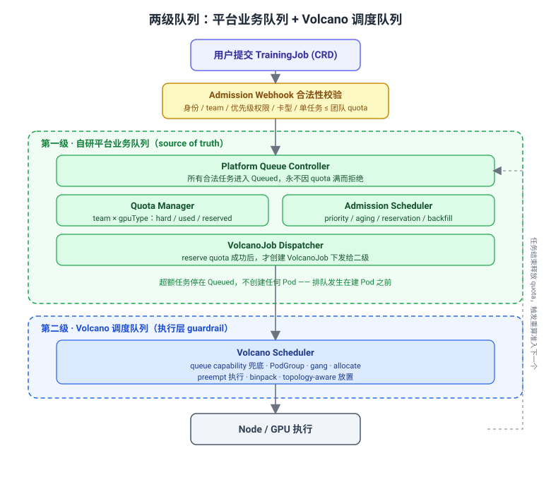

调度框架
基础★☆☆⏱ 28 min一句话结论
GPU 集群调度框架要按“默认 K8s 缺什么、各框架补什么、规模上来后怎么自研”来回答。Volcano 偏批调度和 Gang，Kueue 偏准入排队，YuniKorn 偏层级队列，Run:ai 偏商业 GPU 虚拟化。
为什么不能只用 K8S 默认调度器
K8S 默认调度器适合每个 Pod 独立调度的在线服务。但 GPU 训练任务通常需要一组 Pod 同时启动、长时间运行、拓扑敏感、多租户公平和抢占恢复。默认 scheduler 没有任务级队列、没有作业级配额、没有 Gang 语义，也不能表达“超过 10 张 GPU 后继续提交但排队”。
| 需求 | 默认 K8s 支持情况 | 需要补的能力 |
|---|---|---|
| 任务级排队 | 不支持，只是 Pod 调度队列 | Queue / Workload / AIJob 准入队列 |
| 租户 GPU 限额 | ResourceQuota 会直接拒绝超额创建 | 允许提交，超额任务排队等待 |
| Gang Scheduling | 不支持 job 级 all-or-nothing | PodGroup / Workload / Permit 等待 |
| 异构 GPU | 靠 label / extended resource 粗表达 | ResourceFlavor / DRA / 拓扑画像 |
| 公平共享 | 默认只按 Pod 优先级和资源匹配 | DRF、proportion、borrowing、reclaim |
框架选型地图
| 框架 | 定位 | 最适合 | 主要代价 |
|---|---|---|---|
| Volcano | K8s 原生批调度系统 | 训练/HPC/Spark/Flink 等需要 Gang 和 Queue 的场景 | 学习 CRD 和插件体系，和调度器耦合较深 |
| Kueue | K8s SIG 官方作业准入/排队系统 | 不想替换 scheduler，只想做队列和配额准入 | 不控制 Pod 级调度细节 |
| YuniKorn | 层级队列资源管理器 | 大型组织、多层部门/团队资源治理 | 架构和运维复杂度更高 |
| Run:ai | 商业 GPU 虚拟化平台 | 快速落地 GPU 共享、配额、可视化和成本治理 | 闭源、定制深度受限 |
| 自研队列 + Scheduler Plugin | 按业务定制 | 已有 K8s 基础但需要 AIJob、预测、干扰、代价抢占 | 研发和维护成本最高 |
面试回答套路
- 先说默认 K8s 只能解决 Pod 到 Node 的绑定，不解决任务级队列和 Gang。
- 再说 Volcano / Kueue / YuniKorn / Run:ai 分别补哪一层能力。
- 最后根据规模和需求选型：小规模用 Volcano/Kueue，组织层级复杂看 YuniKorn，需要 GPU 共享商业能力看 Run:ai，深度定制走自研。
一句话结论
Volcano 的核心是 Queue、PodGroup、VolcanoJob：Queue 管多租户资源，PodGroup 管 Gang 原子调度，VolcanoJob 管多角色批作业和生命周期策略。
Volcano 定位与架构

Volcano 是 Kubernetes 批处理调度的新范式：为 AI/ML、HPC 等高性能工作负载补齐默认调度器缺失的 Gang、队列与公平性能力。
Volcano 是 CNCF 孵化的 Kubernetes 批处理调度系统，面向 AI/ML、HPC、Spark、Flink、Ray 等高性能工作负载。它通过 CRD 扩展 K8s 对象，再由 scheduler、controller manager、admission 协同完成批调度。

Volcano 架构图：在 Kubernetes 之上增加 batch scheduler、controller、admission 和 Job / Queue / PodGroup 等 CRD。

Volcano 调度链路：通过 CRD 扩展 K8s 资源对象，再由 scheduler / controller / admission 协同完成批调度。
安装与最小验证
面试不需要背命令，但要知道 Volcano 部署后至少有 scheduler、controller、admission 组件，以及 Queue / PodGroup / Job CRD。
helm repo add volcano-sh https://volcano-sh.github.io/helm-charts
helm repo update
helm upgrade --install volcano volcano-sh/volcano \
--version 1.12.0 \
-n volcano-system \
--create-namespace
kubectl get all -n volcano-system
kubectl get crd | grep volcano使用 Volcano 特性的 Job 要指定 schedulerName: volcano。如果改成 default-scheduler，就无法使用 Volcano 的 Gang、Queue、Fair-share、Preemption 等能力。
三大核心对象关系

Volcano 三大核心对象：Queue（资源池）、PodGroup（Gang 调度单元）、VolcanoJob（批作业抽象）。

Volcano 对象模型：Queue 管资源池，VolcanoJob 管用户作业，PodGroup 管 Gang 调度，TaskInfo 是 Pod 的调度内部包装。

Queue 是资源池，PodGroup 是 Gang 调度单元，VolcanoJob 是批作业抽象。
| 对象 | 一句话 | 关键字段 | 面试重点 |
|---|---|---|---|
| Queue | 多租户资源队列 | weight、capability、deserved、reclaimable | 资源隔离、弹性借用、reclaim |
| PodGroup | 一组强关联 Pod 的 Gang 单元 | minMember、minResources、priorityClassName、queue | All-or-Nothing，避免 partial allocation |
| VolcanoJob | 批作业抽象，包含多个 task | schedulerName、minAvailable、tasks、policies、plugins、queue | 多角色训练任务、生命周期策略 |
Queue：多租户资源管理
| 字段 | 作用 | 面试解释 |
|---|---|---|
weight | 按比例分配资源 | 适合资源软约束，空闲时可以动态共享 |
deserved | 队列期望应得资源 | 表达 fair-share / deserved resource |
capability | 队列可用资源硬上限 | 防止某队列超用整个集群 |
reclaimable | 资源是否可被回收 | 空闲借用和高优队列回收的基础 |
PodGroup：Gang Scheduling 的落地对象
| 字段 | 作用 | 设错的后果 |
|---|---|---|
minMember | 至少多少个 Pod 同时满足才允许启动 | 太低会 partial allocation，太高会长期 Pending |
minResources | 整体最小资源需求 | 可以提前判断集群是否可能满足 |
priorityClassName | PodGroup 优先级 | 影响抢占和排队顺序 |
queue | 归属资源队列 | 影响配额和公平性 |
VolcanoJob：批作业与生命周期策略

VolcanoJob 状态包括 pending、running、restarting、completing、completed、failed、terminating 等。
| 字段 | 作用 | 面试关注点 |
|---|---|---|
schedulerName | 指定调度器 | 保持 volcano 才能使用高级策略 |
minAvailable | Job 正常运行所需最少 Pod 数 | 类似 Gang 的最低可运行条件 |
tasks | 定义多角色 Pod 模板 | PS / Worker / Master / Launcher 等角色 |
policies | 生命周期策略 | PodFailed、PodPending、TaskCompleted 等事件触发动作 |
plugins | 任务级插件 | 如 ssh、svc、env，为分布式任务提供互信和服务发现 |
maxRetry | 最大重试次数 | 故障恢复和失败终止的边界 |
源码视角：Action、Plugin、Session

Volcano 调度周期：OpenSession 建上下文，Plugin 注册算法函数，Action 顺序执行并调用这些函数，CloseSession 清理状态。
Volcano 调度器内部不是简单套 kube-scheduler 的扩展点，而是有自己的 Action + Plugin + Session 框架。理解这层，面试回答会明显更深入。
| 概念 | 作用 | 怎么理解 |
|---|---|---|
| Action | 调度周期里要执行的动作 | 例如 enqueue、allocate、backfill、preempt、reclaim、shuffle |
| Plugin | 给 Action 提供算法函数 | 例如 gang、drf、proportion、priority、binpack |
| Session | 一次调度周期的上下文 | 保存 Jobs、Queues、Nodes 以及插件注册的排序/过滤/抢占函数 |
关键机制：OpenSession 时插件把函数注册到 Session；随后 actions 按配置顺序执行，并调用 Session 里的算法函数；最后 CloseSession 清理和提交状态。
Volcano Actions：一轮调度做哪些动作
| Action | 做什么 | 面试抓手 |
|---|---|---|
enqueue | 把 Pending 的 PodGroup / Job 判断为可入队，更新为 Inqueue | 解决“作业能不能进入队列” |
allocate | 给 Inqueue 任务分配节点资源，选择最合适的 Node | 核心资源分配动作，类似 Filter + Score + Bind 的组合 |
backfill | 利用碎片资源调度适合插空的任务 | 提高利用率，但不能破坏主要调度目标 |
reclaim | 从超额使用队列回收资源 | 队列间公平性和资源借用回收 |
preempt | 同队列或跨队列中按优先级抢占低优任务 | 高优任务保障，注意抢占代价 |
shuffle | 打散或重排任务，缓解局部不优 | 较少面试深挖，知道存在即可 |
runOnce
→ OpenSession(cache, plugins, config)
→ action.Execute(session) // enqueue / allocate / backfill ...
→ plugins registered functions are called through session
→ CloseSession(session)源码对象不要混：VolcanoJob、JobInfo、TaskInfo
| 对象 | 在哪一层 | 真实含义 |
|---|---|---|
| VolcanoJob | CRD / controller 层 | 用户提交的批作业对象，包含 tasks、policies、plugins 等 |
| PodGroup | CRD / scheduler 层 | Gang 调度单元，表达一组 Pod 的 all-or-nothing 语义 |
| JobInfo | scheduler cache / Session 层 | 调度器内部的 Job wrapper，本质更接近 PodGroup 的调度视角 |
| TaskInfo | scheduler cache / Session 层 | Pod 的 wrapper，一个 TaskInfo 基本对应一个 Pod |
| QueueInfo | scheduler cache / Session 层 | Queue 的调度视图，保存 allocated、deserved、capability 等状态 |
Volcano 高频追问
Queue 是租户资源视角，PodGroup 是调度原子性视角，VolcanoJob 是用户提交的批作业视角。
VolcanoJob 提交后会关联一个 Queue，并自动创建 PodGroup。Queue 决定这个 Job 属于哪个资源池；PodGroup 决定这组 Pod 是否满足 minMember / minResources，可以 all-or-nothing 启动；VolcanoJob 自己定义 tasks、policies、plugins、maxRetry 等批任务语义。
不要把 VolcanoJob 等同于 PodGroup。VolcanoJob 是用户作业；PodGroup 是调度器用于 Gang 的原子单元；Queue 是资源治理对象。
默认 kube-scheduler 逐 Pod 调度，可能只启动部分 worker，剩余 worker Pending。对 DDP / MPI / NCCL 这类强同步任务来说，部分 worker 启动没有意义，GPU 会空转，多个 Job 还可能互相占住部分资源形成死锁。
Volcano 用 PodGroup 的 minMember 和 minResources 表达 all-or-nothing 语义。资源不满足时整组等待；资源满足时整体进入运行。
Gang 会提高正确性，但可能增加等待时间。大任务需要凑齐一组资源，小碎片不能随便启动它的一部分。
Volcano 解决了默认 K8s 在批任务里的核心缺口：Gang、Queue、多角色 Job、队列公平和部分抢占。
它不天然解决运行时间预测、干扰感知共置、checkpoint-aware preemption、复杂异构 GPU 拓扑和超大规模全局优化。
当你需要 QAD 这类连续保障度、预测调度、共置干扰模型、代价感知抢占或千卡以上全局优化时，通常要自研 scheduler plugin 或独立调度层。
Action 是调度流程中的动作，例如 enqueue、allocate、backfill、reclaim、preempt。它决定“这一轮调度要做哪些步骤”。
Plugin 是算法提供者，例如 gang、drf、priority、binpack。它把排序、过滤、抢占、可回收判断等函数注册到 Session。
每轮调度先 OpenSession，插件在 OnSessionOpen 里注册函数；Action 执行时调用 Session 里的函数；最后 CloseSession 清理状态。
解决“这个 Job / PodGroup 能不能进入队列成为 Inqueue”。它更偏作业准入和队列状态更新。
解决“已经 Inqueue 的任务具体分配到哪些节点”。它会结合 predicate、node order、task order、queue order 等插件函数做资源分配。
从任务优先级出发，高优任务抢占低优任务，重点是“谁更重要”。
从队列公平性出发，从超额使用或可回收资源的队列里拿回资源，重点是“哪个队列超额了”。
一句话结论
Kueue 是 K8s SIG Scheduling 的作业准入与排队系统：它不替换 kube-scheduler，而是在 Pod 真正进入调度前决定 Workload 能不能开始、用哪类资源开始。
Kueue 解决什么问题
Kueue 的核心不是“给 Pod 打分”，而是“作业能不能被准入”。它适合你不想替换默认 scheduler，但需要 LocalQueue、ClusterQueue、ResourceFlavor、borrowing 和公平共享的场景。
| 对象 | 作用 | 面试解释 |
|---|---|---|
| LocalQueue | namespace 内用户提交入口 | 用户只看到本 namespace 的队列 |
| ClusterQueue | 集群级资源池和配额 | 平台管理员配置 quota、borrowing、flavor |
| ResourceFlavor | 资源类型 / 节点池抽象 | A100、H100、spot、on-demand 等资源口味 |
| Workload | 一个待准入作业的抽象 | 包含 PodSet，Kueue 判断它是否可以开始 |
Kueue 调度链路
- 用户提交 Job / PyTorchJob / RayJob。
- Kueue webhook 或 controller 生成 Workload。
- Workload 进入 LocalQueue，再映射到 ClusterQueue。
- Kueue 判断某个 ResourceFlavor 下是否有足够 nominal quota 或可借用额度。
- 准入后给 PodSet 写入 flavor 相关 nodeSelector / toleration 等信息。
- 具体 Pod → Node 绑定仍由 kube-scheduler 完成。
Kueue vs Volcano
| 维度 | Kueue | Volcano |
|---|---|---|
| 架构 | 准入/排队层，复用 kube-scheduler | 批调度系统，深度控制调度过程 |
| 强项 | 队列、配额、ResourceFlavor、渐进式接入 | Gang、Queue、Job 生命周期、调度插件 |
| 升级风险 | 低，和 scheduler 解耦 | 相对高，和调度链路耦合更深 |
| 控制粒度 | 准入层控制，Pod 绑定交给默认 scheduler | 调度过程内控制，能做更细的 Permit / Reserve |
异构 GPU 集群里“1 张 GPU”不是等价资源。A100/H100/V100、spot/on-demand、不同拓扑和成本都不同。ResourceFlavor 把资源的质纳入队列配额，让 Workload 在准入阶段就知道自己被分到哪类资源。
一句话结论
YuniKorn 更像大组织的层级资源管理器，Run:ai 更像商业 GPU 虚拟化和配额平台。它们解决的不是同一个层面的问题。
YuniKorn：层级队列和 Application 级调度
YuniKorn 源自 YARN 的资源管理思想，核心优势是层级队列。它适合公司 / 部门 / 团队 / 项目多层资源治理场景。
| 能力 | 说明 | 适用场景 |
|---|---|---|
| 层级队列 | root → department → team → project | 大型组织资源治理 |
| Application 级调度 | 一组 Pod 作为一个应用管理 | Spark、Flink、训练任务 |
| 替换调度器 | 可以作为完整 scheduler 运行 | 需要强资源管理能力的集群 |
Run:ai：商业 GPU 共享和配额平台
Run:ai 提供 GPU 分时共享、配额、项目级资源治理、可视化和成本归因。它的优势是开箱即用，适合想快速落地 GPU 平台能力的团队。
| 能力 | 价值 | 局限 |
|---|---|---|
| GPU sharing | 提高 Notebook、小实验、推理任务利用率 | 闭源实现，深度定制受限 |
| Quota / borrowing | 项目级配额和空闲借用 | 策略能力取决于产品版本 |
| 可视化 | 降低平台运维门槛 | 大规模特殊需求可能仍需自研 |
层级队列把组织结构映射到资源治理：公司给部门配额，部门给团队配额，团队之间可以按规则借用和回收。扁平队列在团队少时够用，但组织层级多后很难维护公平和预算边界。
一句话结论
原生 Kubernetes 的 ResourceQuota 是“超额即拒绝”语义，满足不了“用户照常提交、超额任务排队、有资源自动顶上”的诉求。生产做法是两级队列：自己实现一级业务队列（TrainingJob + 配额账本 + 准入策略），只把拿到 quota token 的任务下发给 Volcano；Volcano 作为二级调度器只负责 gang、PodGroup、放置和抢占执行。配额账本和任务状态存在 CRD 的 spec / status，由 etcd 持久化，不另起数据库。
面试场景题（面试官口吻）
这类题面试官不会直接说“设计一个 CRD”，而是给业务场景让你识别原生能力缺口：
“我们有一个几千张卡的 GPU 训练集群，混合了 A100 80G、H100、V100 多种型号。资源按团队分配额度，而且是按卡型分别给：比如推荐团队分到 64 张 A100、16 张 H100。这个团队几十号算法工程师白天会密集提交训练任务，有人跑单卡调试，有人提 8 卡实验，还有人要 32 卡做大模型预训练。高峰期他们提交的任务加起来需要的 A100 远超 64 张。
我的诉求是：配额是硬上限不能突破（不然挤占别的团队），但又不能让工程师提交时直接报错——应该能正常提交，超额的自动排队，集群里有任务跑完释放卡，排队的自动顶上。同时 32 卡大任务不能被一堆小任务一直插队饿死，重要任务还得能优先。你用 Kubernetes 怎么设计？原生的 ResourceQuota、scheduler 能直接满足吗？哪里不够、你怎么补？”
| 这道题在考你 | 想确认你懂 |
|---|---|
| 识别原生能力边界 | ResourceQuota 是“拒绝”语义，不是“排队”语义 |
| 排队的位置 | 排队要发生在建 Pod 之前，不是让 Pod 涌进 scheduler |
| 异构配额 | 额度按 (team, gpuType) 分别算，不能合并成总卡数 |
| 两级队列 | 业务准入（配额/优先级/防饿死）vs 调度放置（gang/拓扑）分开 |
| 状态怎么存 | CRD + etcd，不另起数据库；账本靠 reconcile 重算 |
| 落地参照 | 知道 Volcano / Kueue 是这套结构，但 Volcano 只承担二级 |
为什么原生机制和单靠 Volcano 都不够
| 机制 | 能不能满足 | 原因 |
|---|---|---|
| ResourceQuota | 不满足 | 超 quota 直接 Forbidden 拒绝创建，不保留等待队列，违背“超额也能提交” |
| PriorityClass | 不满足 | 只表达优先级，不表达团队/卡型运行上限 |
| 默认 scheduler | 不满足 | 只消费已创建 Pod，不管理任务级准入队列 |
| 单靠 Volcano | 不建议完全依赖 | 它的 Queue 偏 scheduler 内部队列：能让 PodGroup Pending，但不承载“你排第几、是 A100 还是 H100 不足、预计何时启动”等业务语义 |
| 两级：自研业务队列 + Volcano | 满足 | 一级管业务准入与配额，二级管 gang 与放置 |
Volcano 文档明确：当 enqueue 判断某 PodGroup 不允许进入队列时，vc-controller 不会创建 pending pods，reclaim/preempt 也不执行。这会影响“超额任务排着、重要任务可触发抢占/回收”的业务语义，所以业务排队不能完全交给 Volcano。
推荐架构：两级队列
核心原则：用 Volcano 做二级调度器，不让它承担完整业务排队。自己实现一级 TrainingJob Queue，所有超额任务先进自研队列，只有拿到团队/卡型 quota token 后才创建 VolcanoJob。

两级队列：一级自研业务队列负责准入与配额（source of truth），二级 Volcano 负责 gang 调度与放置。超额任务停在 Queued，不创建 Pod。
| 层级 | 组件 | 职责 |
|---|---|---|
| 一级 自研平台 | Admission Webhook | 校验身份、team、优先级权限、卡型；拦截“单任务请求 > 团队 quota”这种永远无法满足的任务 |
| Platform Queue Controller | 接收所有合法 TrainingJob，永不因当前 quota 满而拒绝，进入 Queued | |
| Quota Manager | 维护 (team, gpuType) 的 hard / used / reserved 账本，是业务配额的 source of truth | |
| Admission Scheduler + Dispatcher | 按 priority / aging / 大任务 reservation / backfill 排序，reserve quota 后才创建 VolcanoJob | |
| 二级 Volcano | Volcano Queue capability | 按卡型配 capability，作为执行层 guardrail，即使平台 bug 多放也不会无限超发 |
| Volcano Scheduler | 只接收已 admission 的任务，做 PodGroup、gang、allocate、preempt、binpack、topology-aware 放置 |
异构配额：账本是二维表，不是一个数
A100 和 V100 不能 1:1 抵扣，所以配额账本必须按 (team, gpuType) 分格维护，准入判断也要先看任务要哪种卡，再查那一格：
recommend / a100-80g : hard=64 used=? reserved=?
recommend / h100 : hard=16 used=? reserved=?
search / a100-80g : hard=32 ...
准入判断：该格 used + reserved + 任务要的同型号卡数 <= 该格 hard这正好对应 Kueue 的 ResourceFlavor（按卡型区分资源）和 Volcano Queue 的多维 capability。业务队列本身也按这个维度分层：
TeamQueue
└── GPUTypeQueue
└── PriorityQueue
└── FIFO / Aging / Backfill
recommend
├── a100 ├── P0 ├── P1 ├── P2 └── P3
└── h100 ├── P0 ├── P1 ├── P2 └── P3具体走例：团队 20 张 A100，已用 15，连续提交
用一个小数字把准入逻辑走通（生产是 64，这里用 20 便于看）。team-a 配额 20，已跑 15（Job-A=8, Job-B=7），用户连续提交 Job-C(4)、Job-D(6)、Job-E(2)：
第 1 轮 reconcile（提交后）：
running = Σ(Running/Admitted) = 8 + 7 = 15 # 重新数，不是存的
pending = [C(4), D(6), E(2)] # 按入队顺序
C：15 + 4 = 19 <= 20 ✅ Admitted，running→19
D：19 + 6 = 25 > 20 ❌ break（不跳过去看更小的 E，防止大任务被饿死）
结果：只有 C 被准入并建 Pod；D、E 停在 Queued，一个 Pod 都不建
第 2 轮 reconcile（Job-A 跑完释放 8 张，触发重算）：
running = 7 + 4 = 11 # B + C
D：11 + 6 = 17 <= 20 ✅ Admitted，running→17
E：17 + 2 = 19 <= 20 ✅ Admitted，running→19
结果：D、E 都被准入并建 Pod状态存哪里：不用数据库，存在 CRD 的 spec / status
很多人第一反应是“再起一个 MySQL / Redis 存队列和配额”，但在 K8s 里更标准的做法是不引入外部数据库，把状态拆成两类，全部交给 etcd：
| 状态类型 | 存在哪 | 谁写 | 例子 |
|---|---|---|---|
| 用户期望（desired） | CRD 的 spec | 用户 / 提交端 | 要几张卡、哪种卡型、哪个队列、优先级 |
| 系统观测（observed） | CRD 的 status | 控制器 | TrainingJob 当前 phase、配额账本已用量、等待列表 |
etcd 是 K8s 的强一致 KV 存储，CRD 读写都走 API Server，自带 watch、乐观锁（resourceVersion）、RBAC 和审计。另搭数据库反而要自己解决一致性、备份、和 etcd 状态对不齐的问题，所以默认不这么做。
# TrainingJob：任务期望 + 状态机
apiVersion: scheduling.example.com/v1
kind: TrainingJob
metadata:
name: llm-pretrain-001
spec:
team: recommend
gpuType: a100-80g
gpuCount: 32
priority: p1
minAvailable: 32 # Gang：32 个 Pod 要么一起跑
status:
phase: Queued # Submitted->Queued->Admitting->SubmittedToVolcano->Running->Succeeded/Failed/Cancelled
reason: "waiting for a100 quota"# 配额账本：按 (team, gpuType) 分格，存在账本 CRD 的 status
status:
quotas:
- team: recommend
gpuType: a100-80g
hard: 64
used: 60 # 在跑的同型号卡总数
reserved: 4 # 已 reserve、待 Volcano 拉起
- team: recommend
gpuType: h100
hard: 16
used: 8
reserved: 0配额账本怎么算出来：reconcile 而不是手工加减
关键认知：used 这个数字不要靠“准入时 +N、结束时 -N”手工累加，因为控制器会重启、会漏事件，累加值会和真实情况飘移。正确做法是每次 reconcile 都从真相源全量重算：
reconcile(team, gpuType):
1. List 该 team 该卡型下 phase∈{Admitting,SubmittedToVolcano,Running} 的 TrainingJob
2. used = Σ(它们的 gpuCount) # 重新算，不依赖旧值
3. for job in pending(按 priority/aging/FIFO 排序):
if used + reserved + job.gpuCount <= hard and rough_cluster_fit(job):
reserve_quota(job); create_volcano_job(job)
job.phase = SubmittedToVolcano
else:
break # 队头算不动就停，保证顺序、防饿死
4. 写回 quota.status 和各 job.status控制器重启、丢了内存队列后，下次 reconcile 也能从 etcd 里的 TrainingJob 列表把账本完整重建，状态是“可重算的”而不是“攒出来的”——这就是 K8s 控制器 level-triggered（看最终状态）而非 edge-triggered（依赖每个事件）的思想。
并发与一致性：多副本控制器怎么不互相打架
| 问题 | 处理方式 |
|---|---|
| 两个任务同时准入导致超额 | 同一个 (team,gpuType) 串行 reconcile（workqueue 按 key 去重，同 key 不并发），不会两个 goroutine 同改一个账本 |
| 写 status 时对象已被改过 | API Server 用 resourceVersion 乐观锁，update 冲突返回 409，控制器 requeue 重算再写 |
| 控制器跑多副本 | 用 Lease 做 leader election，同一时刻只有一个 leader 真正 reconcile |
| reserve 后 Volcano 长时间拉不起来 | SubmittedToVolcano 设超时，超时 Requeue 退回 Queued 并释放 reserved，避免名额被占死 |
宕机恢复：控制器无状态，靠 reconcile 重建
控制器内存里的队列只是缓存。崩溃 / 升级 / 重调度后：
- 新实例启动，通过 informer 从 API Server List + Watch 拉全量 TrainingJob 和账本 CRD。
- 对每个
(team,gpuType)触发 reconcile，重新算 used 和准入结果。 - 已经在跑的 Pod 不受影响（真相在 etcd 和节点上），队列顺序从 TrainingJob 的创建时间 / 优先级字段恢复。
所以“状态怎么保存”的答案是：任务和配额状态保存在 etcd 里的 CRD 对象上，控制器自己不持久化任何东西，靠 reconcile 随时重建。只有 etcd 不该放的东西才进外部数据库——跨集群全局配额、长期计费/用量审计、历史任务归档写 Postgres/ClickHouse，但准入决策的实时账本仍留在 etcd。
大任务防饿死与抢占：策略在平台层，执行在 Volcano
| 能力 | 放哪 | 为什么 |
|---|---|---|
| head-of-line reservation | 平台层 | 32 卡大任务等久了要占住名额，不让小任务无限插队 |
| conservative backfill | 平台层 | 只在不影响大任务预计启动时，才放声明短时长的小任务回填空隙 |
| aging / 用户级公平 | 平台层 | Volcano 不知道业务意图（等了几小时、debug 任务多久结束） |
| 选 victim（抢谁） | 平台层 | 挑低优先级、可抢占、有 checkpoint、释放卡数合适、损失最小的任务 |
| gang 调度 | Volcano | 一旦下发，保证 32 个 Pod 要么一起跑 |
| PodGroup/Pod 抢占执行 | Volcano | preempt action 执行同 queue 内实际驱逐与重调度 |
三个不建议的做法
| 不建议 | 问题 |
|---|---|
| 让用户直接提交 VolcanoJob | 平台无法稳定控排队顺序、业务状态不可解释、Pending 对象太多污染调度层、权限和防绕过难做、大任务防饿死难做 |
| 用 ResourceQuota 做硬限制 | 超额提交直接 Forbidden，不符合“正常提交、超额排队”的诉求 |
| 完全相信 Volcano Queue capability | 它只能当底线 guardrail，不能当唯一账本——pending 统计、队列位置、用户级公平、单任务合法性、业务优先级、审计计费都还得平台层做 |
关联模块
Volcano：PodGroup、Gang、Queue、Priority、Preempt、Reclaim 等二级调度能力细节。Kueue：LocalQueue / ClusterQueue / ResourceFlavor / Workload 准入排队，是“准入队列”的官方实现参照。多租户管理：配额、隔离、公平性与资源治理的总论。GPU 拓扑与通信：二级调度里 topology-aware 放置和 NCCL 通信背景。故障处理与弹性：抢占 victim 选择依赖的 checkpoint 策略。